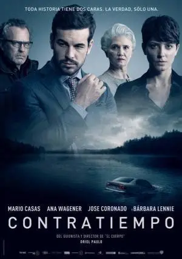

导演：奥里奥尔·保罗
编剧：奥里奥尔·保罗
主演：马里奥·卡萨斯 / 阿娜·瓦格纳 / 何塞·科罗纳多 / 巴巴拉·莱涅
类型：悬疑 / 惊悚 / 犯罪
制片国家/地区：西班牙
语言：西班牙语
上映日期：2016-09-23（西班牙）/ 2017-09-15（中国大陆）
片长：106 分钟
事业有成的企业家艾德里安被控在旅馆密室中杀害情妇，陷入舆论漩涡，庭审在即。金牌女律师弗吉尼亚深夜来访，要求他在有限的时间内说出全部真相，以应对法庭上的突然袭击。随着两人的对话层层深入，密室杀人、车祸隐情、身份谜团不断反转，每一个版本的"真相"背后，似乎都藏着更深的秘密。而这场较量的最后，才是一切的开始。